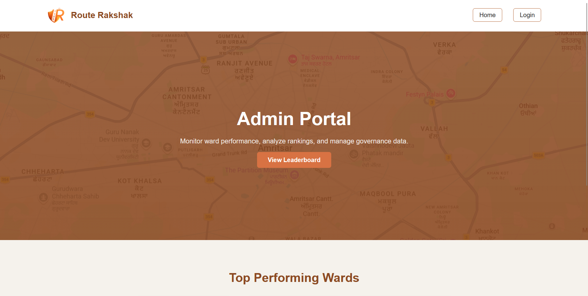
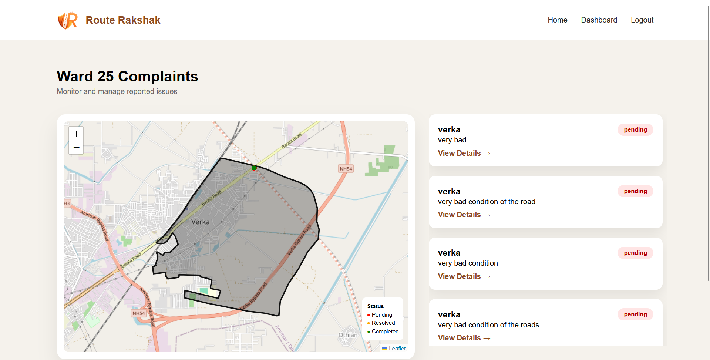

Route Rakshak
Civic-tech platform improving complaint management and enabling data-driven governance.

Problem
Complaint systems lack transparency and tracking. Citizens remain unaware of progress.
Solution
Built a centralized platform with real-time tracking and ward-level analytics.
Workflow
Submit Complaint
Database Storage
Admin Review
Status Update
Key Features
- Complaint tracking system
- Admin dashboard
- Ward performance analytics
- Secure authentication
Tech Stack
Node.js • Express • MongoDB • Mongoose • QGIS
Screenshots


What I Learned
Improved backend architecture skills, learned real-time data handling, and gained experience building scalable civic-tech systems.